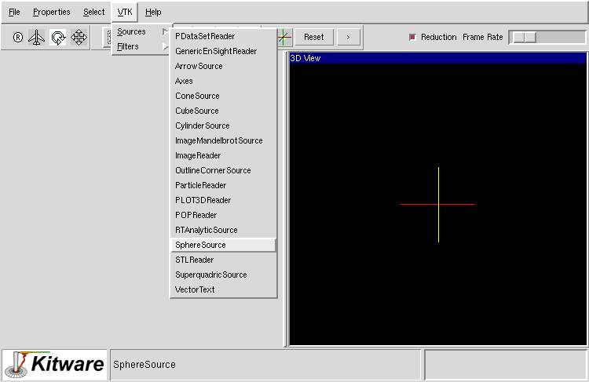

Up
Next
Step 1
Start ParaView (see
for information on how to launch ParaView)
Step 2
Create a sphere source by selecting SphereSource from VTK -> Sources menu.

Up
Next
Last modified: Mon Oct 22 15:41:54 EDT 2001